| stamps | Name | RA | DEC | z | z_err | Confidence | Linelist | Flag | z_guess | z_Halpha | mag356W | mag200W | mag115W | mag850LP | mag775W | mag606W | |
|---|---|---|---|---|---|---|---|---|---|---|---|---|---|---|---|---|---|
| 0 | 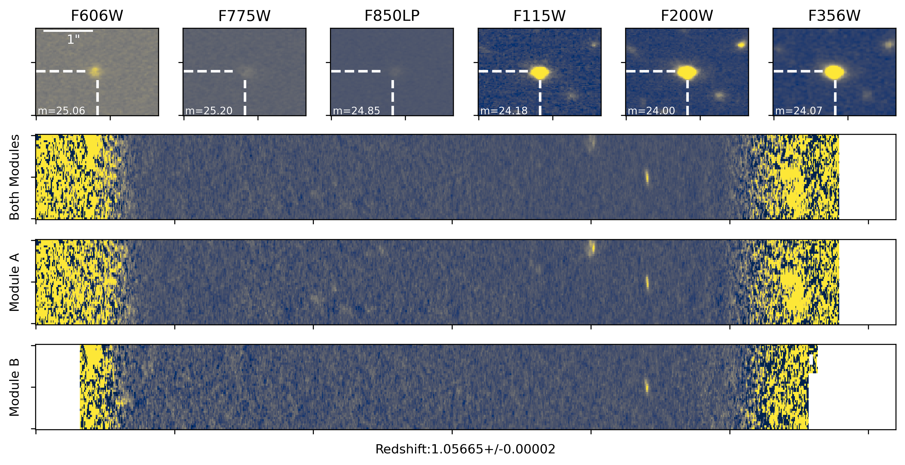 |
v3corstacked_2D_7089 | 15.056547 | 28.049281 | 1.056648 | 0.000016 | 2.0 | Eiger_Strong | check photo-z, likely candidate, based on pontential second line and stamp image size | 0.0 | 4.879989 | 24.070475 | 24.003695 | 24.183588 | 24.850210 | 25.195339 | 25.061874 |
| 1 | 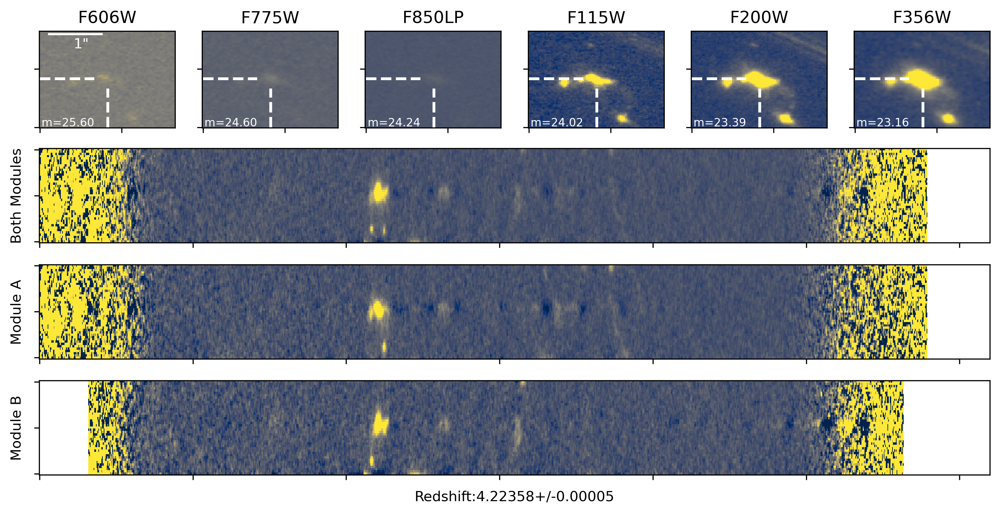 |
v3corstacked_2D_10308 | 15.052965 | 28.041457 | 4.223584 | 0.000052 | 3.0 | Eiger_Strong | confident detection | 0.0 | 4.228008 | 23.159973 | 23.387407 | 24.019217 | 24.240501 | 24.601282 | 25.599981 |
| 2 | 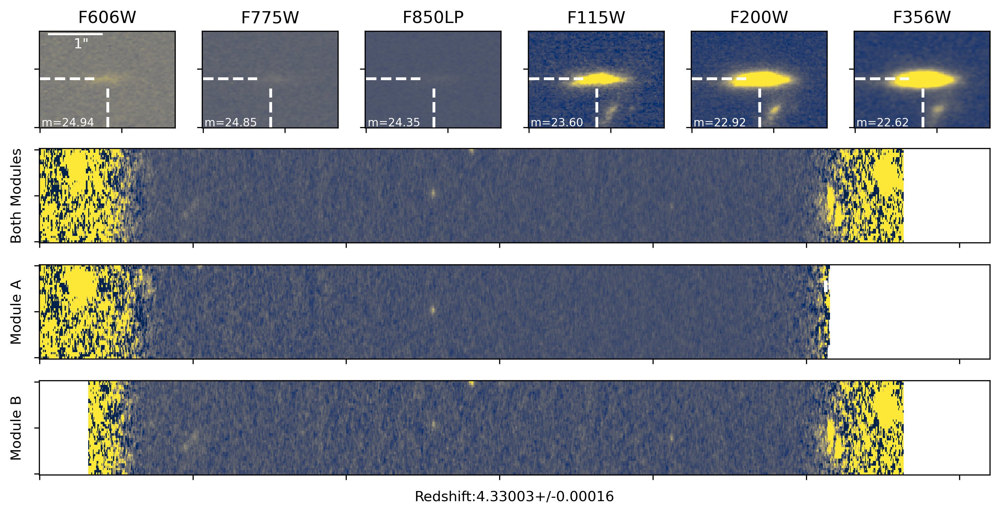 |
v3corstacked_2D_19272 | 15.055434 | 28.033547 | 4.330033 | 0.000164 | 1.5 | Eiger_Strong | Check photo-z | 0.0 | 4.333275 | 22.617226 | 22.924448 | 23.599009 | 24.349028 | 24.846743 | 24.943548 |
| 3 | 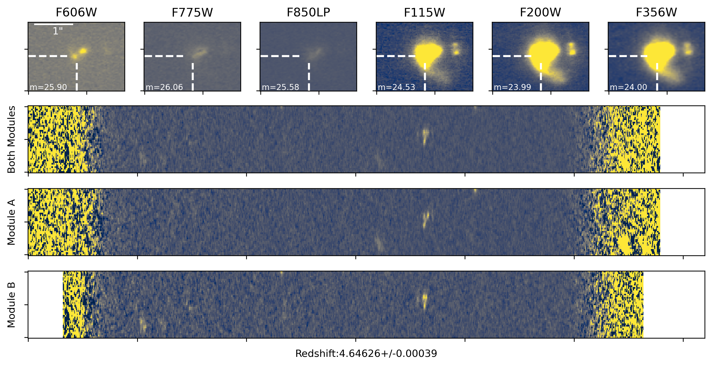 |
v3corstacked_2D_8856 | 15.054385 | 28.043725 | 4.646264 | 0.000386 | 2.0 | Eiger_Strong | Very likely H-alpha from the brigher galaxy, Merger? | 0.0 | 4.651640 | 23.998203 | 23.987370 | 24.526312 | 25.580627 | 26.060646 | 25.897745 |
| 4 | 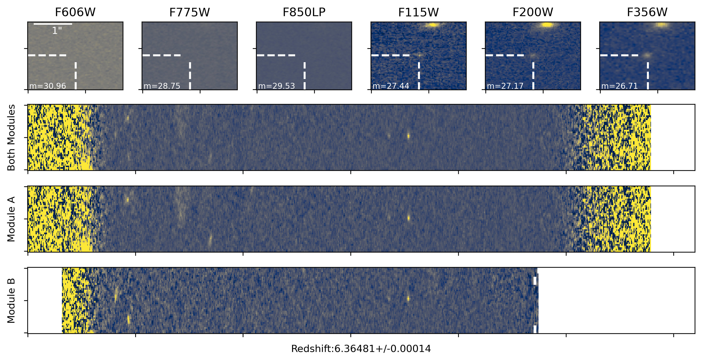 |
v3corstacked_2D_16568 | 15.038863 | 28.042671 | 6.364809 | 0.000141 | 3.0 | Eiger_Strong | Good fit | 0.0 | 4.621911 | 26.709532 | 27.171560 | 27.438511 | 29.527683 | 28.750462 | 30.958197 |
| 5 | 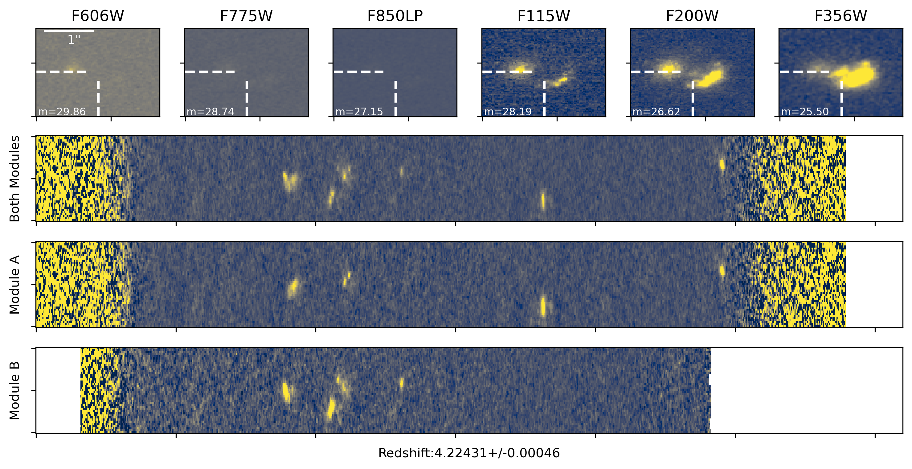 |
v3corstacked_2D_14934 | 15.034753 | 28.039800 | 4.224310 | 0.000461 | 2.5 | Eiger_Strong | Probably a good fit, need photo-z, check morphology of contaminating line. Module A gives a good fit for Halpha | 0.0 | 4.226626 | 25.499504 | 26.621553 | 28.190248 | 27.147024 | 28.741207 | 29.858706 |
| 6 | 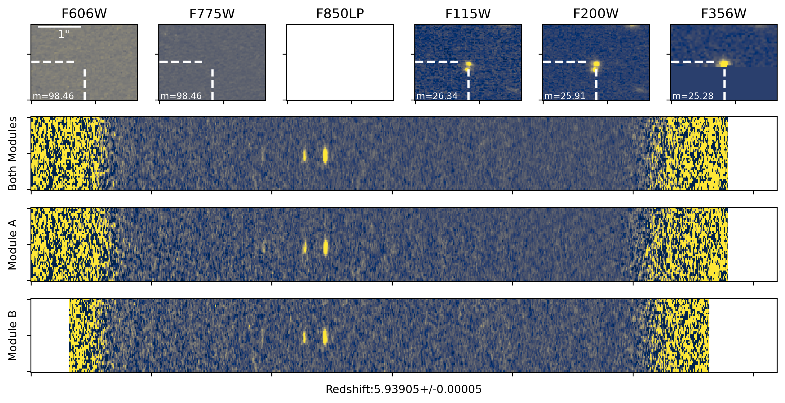 |
v3corstacked_2D_31 | 15.081567 | 28.053463 | 5.939049 | 0.000050 | 3.0 | Eiger_Strong | Very good fit | 0.0 | 4.246111 | 25.284405 | 25.908352 | 26.344151 | 98.461212 | 98.461212 | 98.461212 |
| 7 | 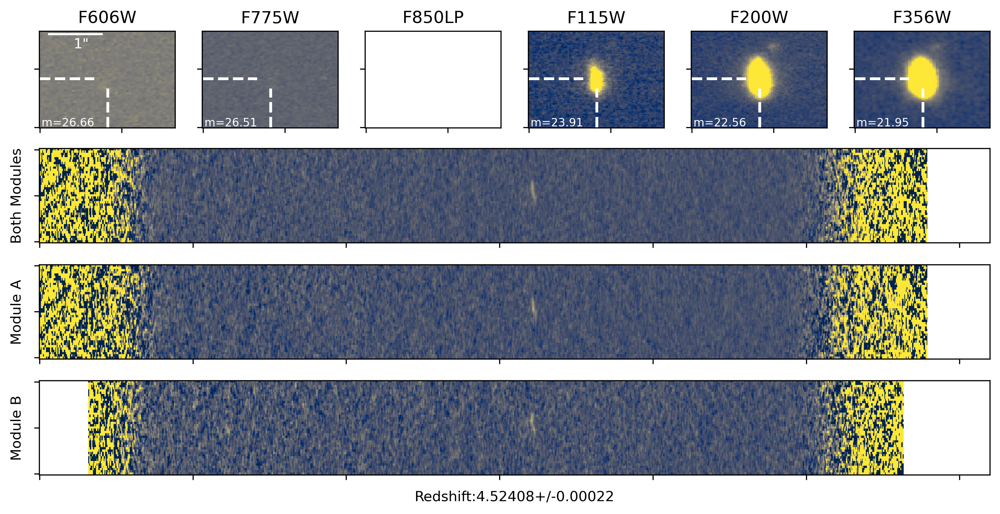 |
v3corstacked_2D_981 | 15.078681 | 28.053519 | 4.524082 | 0.000225 | 1.5 | Eiger_Strong | Low confidence, need photoz | NaN | 4.527375 | 21.950533 | 22.556440 | 23.907246 | 98.683647 | 26.510950 | 26.662111 |
| 8 | 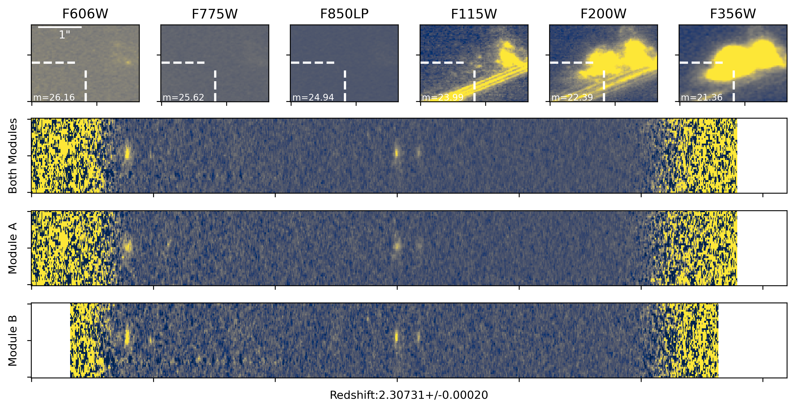 |
v3corstacked_2D_14518 | 15.039485 | 28.031303 | 2.307314 | 0.000196 | 3.0 | Eiger_Strong | High confidence low-z | 0.0 | 4.514653 | 21.359781 | 22.391893 | 23.987495 | 24.939285 | 25.615005 | 26.159950 |
| 9 | 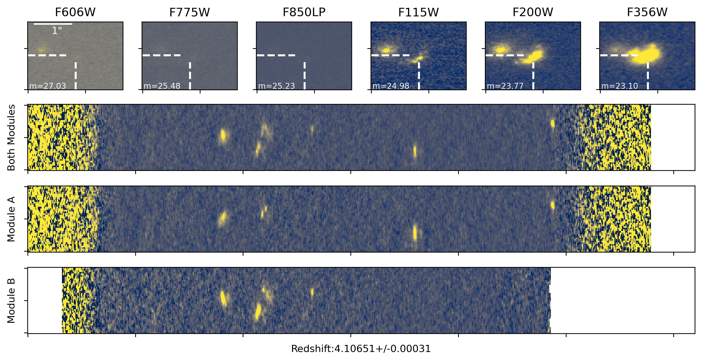 |
v3corstacked_2D_14919 | 15.034846 | 28.039735 | 4.106509 | 0.000313 | 1.0 | Eiger_Strong | Low confidence, need photo-z | 0.0 | 4.228932 | 23.104116 | 23.768408 | 24.976866 | 25.230936 | 25.484819 | 27.033577 |
| 10 | 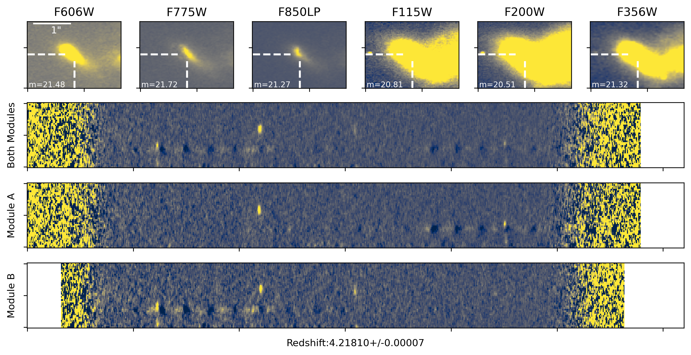 |
v3corstacked_2D_3007 | 15.071645 | 28.054181 | 4.218103 | 0.000072 | 2.0 | Eiger_Strong | Potential single line Halpha, need photoz | 0.0 | 4.223557 | 21.317896 | 20.512974 | 20.809418 | 21.266880 | 21.720774 | 21.483837 |
| 11 | 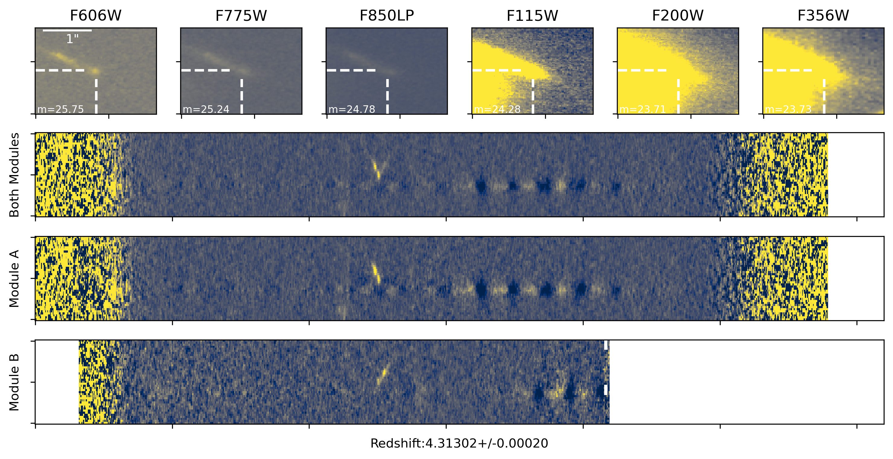 |
v3corstacked_2D_13157 | 15.029782 | 28.039471 | 4.313024 | 0.000196 | 2.0 | Eiger_Strong | Low confidence, need photo-z/Merger? | 0.0 | 4.315791 | 23.731174 | 23.707569 | 24.277023 | 24.776896 | 25.238039 | 25.749285 |
| 12 | 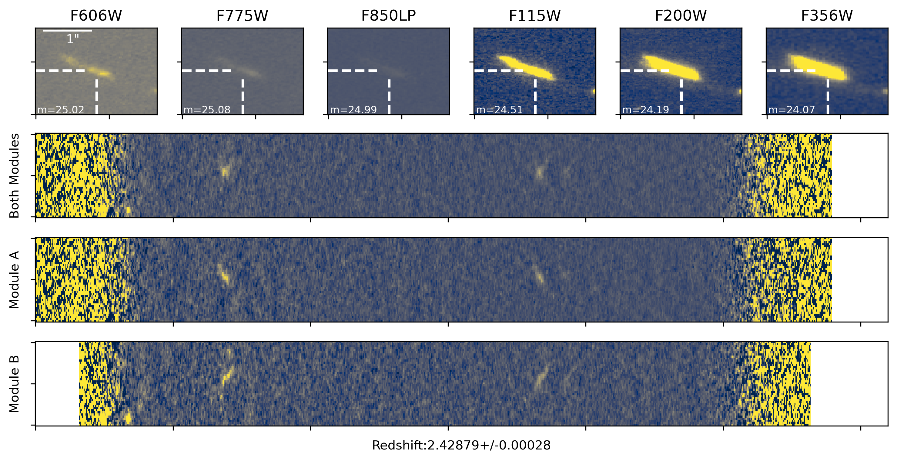 |
v3corstacked_2D_2476 | 15.074200 | 28.049114 | 2.428786 | 0.000275 | 3.0 | Eiger_Strong | High confidence, low z galaxy | 0.0 | 4.659996 | 24.066181 | 24.188885 | 24.510981 | 24.986263 | 25.080544 | 25.015984 |
| 13 | 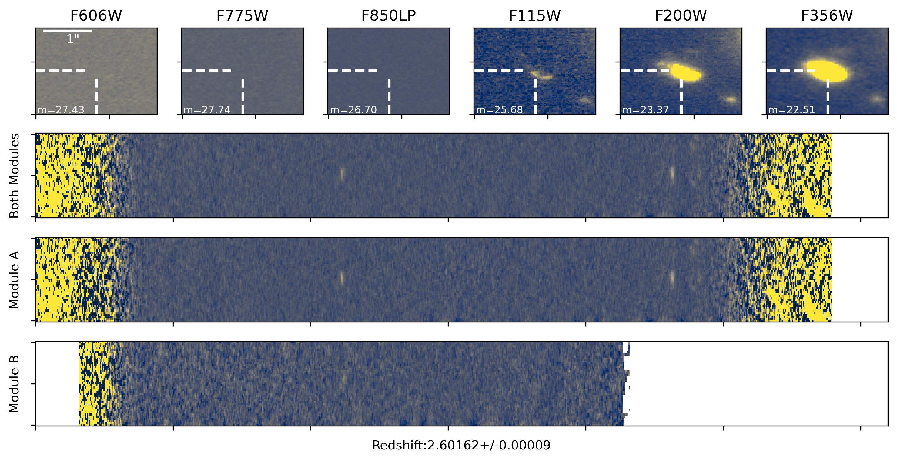 |
v3corstacked_2D_8565 | 15.050729 | 28.051810 | 2.601624 | 0.000095 | 3.0 | Eiger_Strong | High confidence, low z galaxy | 0.0 | 4.233895 | 22.507153 | 23.368250 | 25.682117 | 26.700317 | 27.741610 | 27.433908 |
| 14 | 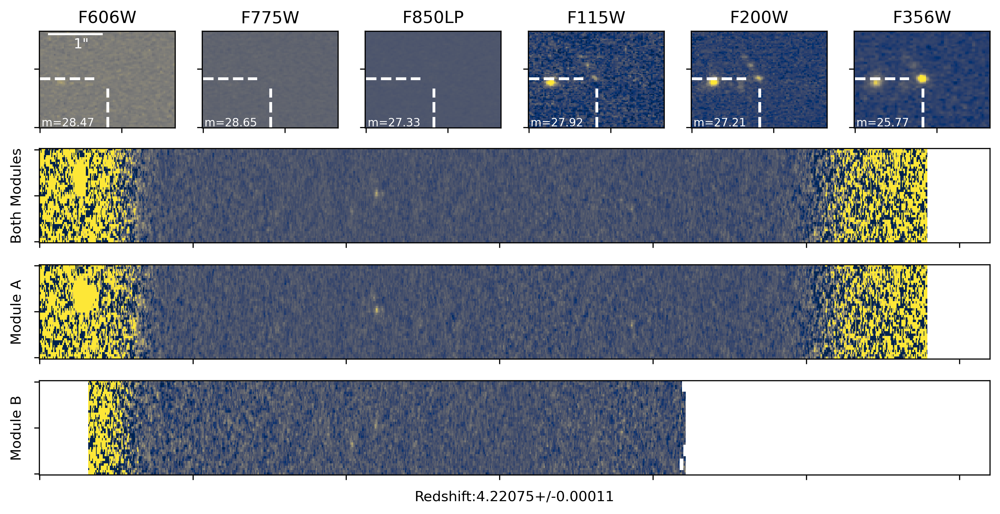 |
v3corstacked_2D_581 | 15.071115 | 28.064032 | 4.220755 | 0.000115 | 1.5 | Eiger_Strong | Low confidence, need photo-z | 0.0 | 4.224012 | 25.770435 | 27.207085 | 27.919579 | 27.325615 | 28.648949 | 28.467150 |
| 15 | 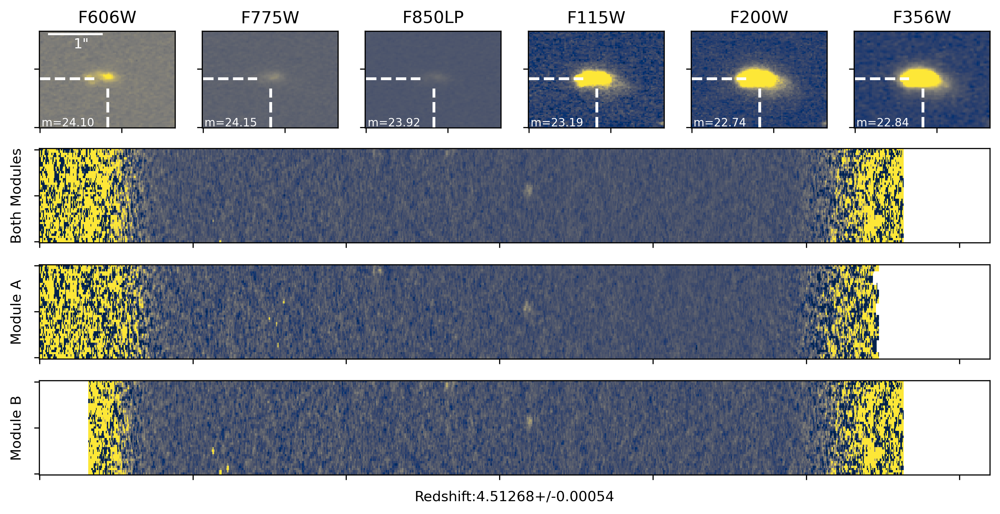 |
v3corstacked_2D_6193 | 15.066345 | 28.041272 | 4.512682 | 0.000542 | 1.5 | Eiger_Strong | Low confidence-check photo-z | 0.0 | 4.518614 | 22.843977 | 22.739607 | 23.190945 | 23.920055 | 24.154694 | 24.101900 |
| 16 | 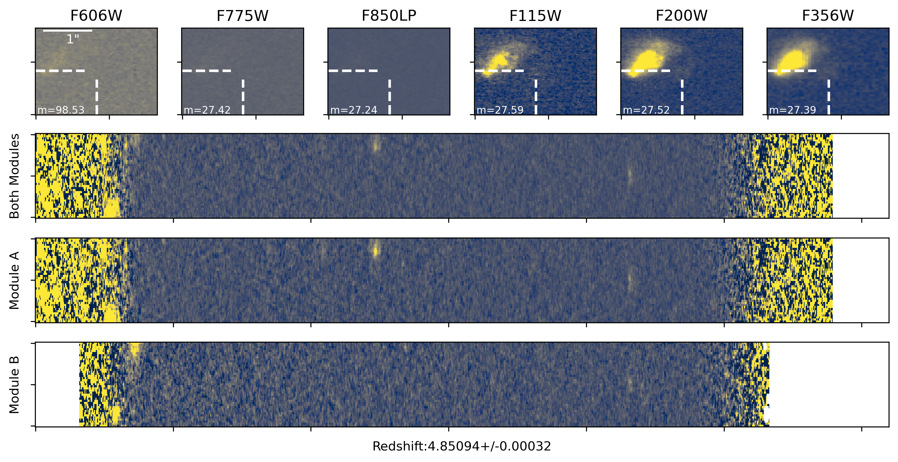 |
v3corstacked_2D_11862 | 15.027963 | 28.033559 | 4.850944 | 0.000315 | 2.0 | Eiger_Strong | Possible-check photo-z | 0.0 | 4.853619 | 27.389683 | 27.519508 | 27.586100 | 27.244297 | 27.423347 | 98.526665 |
| 17 | 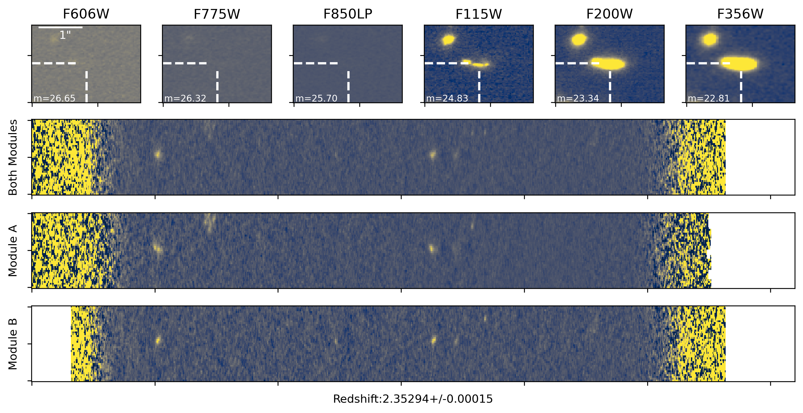 |
v3corstacked_2D_9138 | 15.059515 | 28.037460 | 2.352936 | 0.000153 | 3.0 | Eiger_Strong | High confidence, low-z galaxy | 0.0 | 4.538963 | 22.813984 | 23.341707 | 24.826694 | 25.702929 | 26.324055 | 26.649574 |
| 18 | 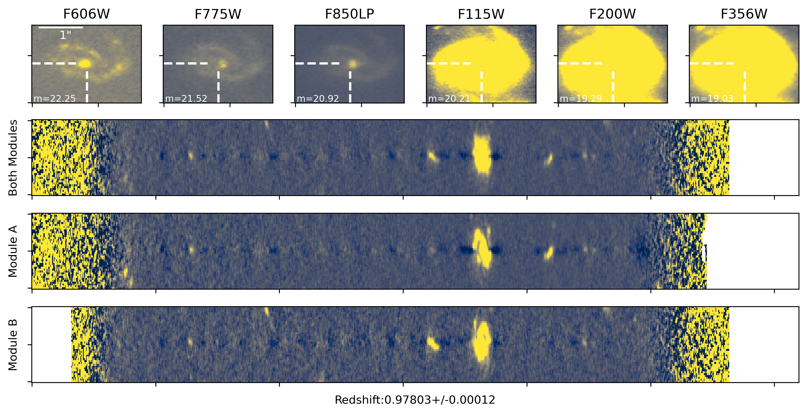 |
v3corstacked_2D_15512 | 15.051086 | 28.032251 | 0.978026 | 0.000122 | 1.0 | Eiger_Strong | Photo-z needed, identify the weak line at 3.249 micron | 0.0 | 4.651528 | 19.027725 | 19.287195 | 20.210306 | 20.922022 | 21.521303 | 22.251390 |
| 19 | 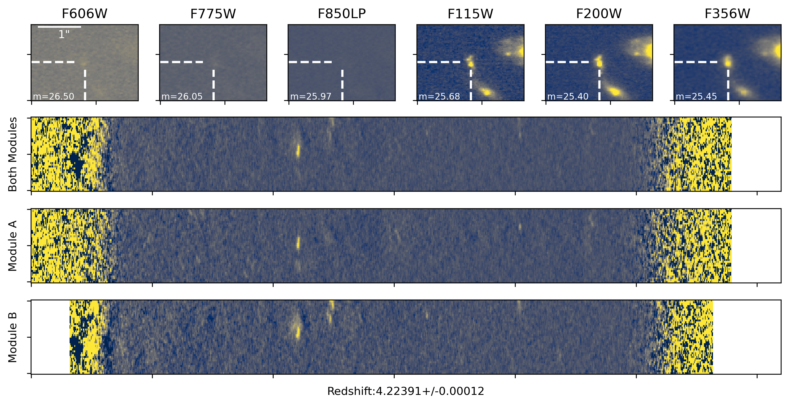 |
v3corstacked_2D_18550 | 15.047918 | 28.040631 | 4.223912 | 0.000121 | 1.0 | Eiger_Strong | Something odd with the spectrum. visual spectrum plot doesn't match. check | 0.0 | 4.223939 | 25.449327 | 25.403723 | 25.682068 | 25.974827 | 26.047012 | 26.497612 |
| 20 | 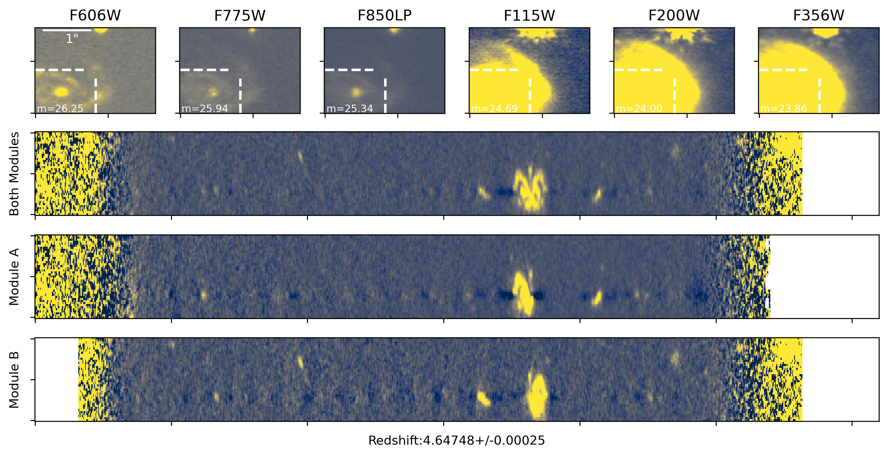 |
v3corstacked_2D_15504 | 15.051039 | 28.032004 | 4.647485 | 0.000246 | 1.0 | Eiger_Strong | Potential high-z interloper, need photo-z, second solution= merger component with the brighter spiral galaxy | 0.0 | 4.651205 | 23.863060 | 24.003220 | 24.688917 | 25.344210 | 25.935616 | 26.245134 |
| 21 | v3corstacked_2D_7015 | 15.060279 | 28.043977 | 4.221978 | 0.000327 | 2.0 | Eiger_Strong | Merger candidate, need photo-z to confirm | 0.0 | 4.223984 | 26.428461 | 26.636925 | 27.219448 | 29.227535 | 27.759075 | 28.353733 | |
| 22 | 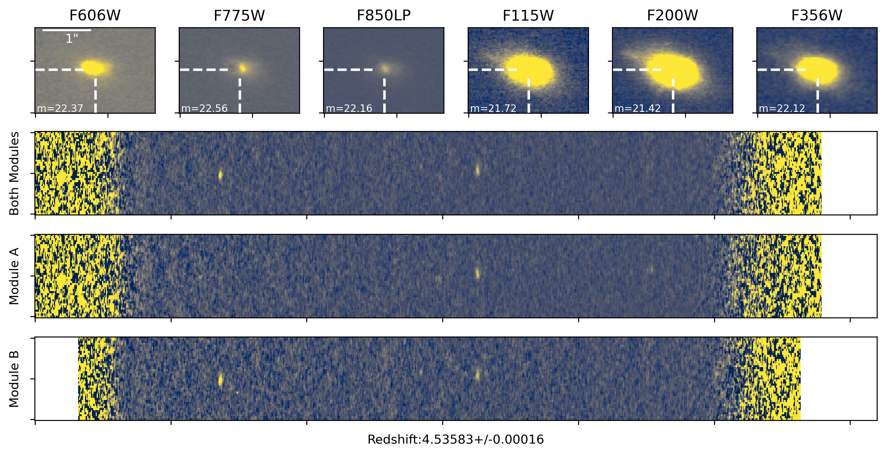 |
v3corstacked_2D_3113 | 15.073298 | 28.049141 | 4.535827 | 0.000158 | 1.0 | Eiger_Strong | Low confidence, need photo-z to verify | 0.0 | 4.539151 | 22.118275 | 21.417873 | 21.715902 | 22.156218 | 22.556667 | 22.370378 |
| 23 | 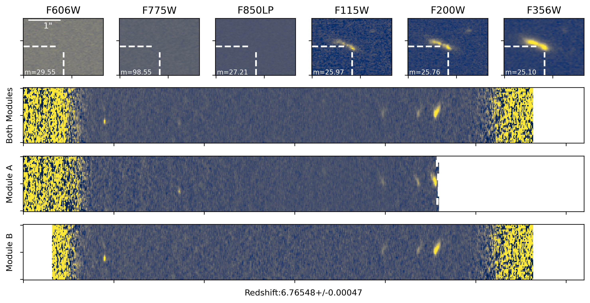 |
v3corstacked_2D_18551 | 15.054300 | 28.030553 | 6.765482 | 0.000470 | 3.0 | Eiger_Strong | High confidence | 0.0 | 4.869247 | 25.097588 | 25.757656 | 25.966301 | 27.205881 | 98.550148 | 29.551985 |
| 24 | 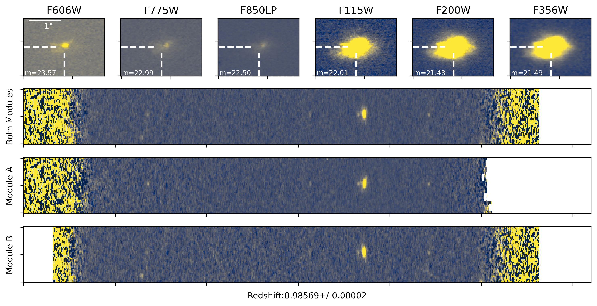 |
v3corstacked_2D_18051 | 15.051136 | 28.030863 | 0.985692 | 0.000016 | 2.5 | Eiger_Strong | confident fit, stamp shows a bright big galaxy, confirm with photo-z | 0.0 | 4.656876 | 21.486118 | 21.478880 | 22.014193 | 22.498541 | 22.985731 | 23.573088 |
| 25 | 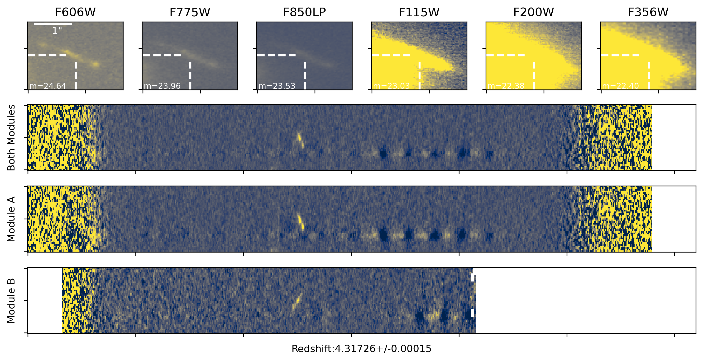 |
v3corstacked_2D_13152 | 15.029615 | 28.039548 | 4.317261 | 0.000150 | 2.0 | Eiger_Strong | Potential merger candidate, see gal id 13157. need photo-z to confirm | 0.0 | 4.319661 | 22.397961 | 22.380592 | 23.030510 | 23.530472 | 23.955338 | 24.637938 |
| 26 | v3corstacked_2D_18026 | 15.051091 | 28.033428 | 6.761464 | 0.000118 | 3.0 | Eiger_Strong | Very confident | 0.0 | 4.867641 | 25.328686 | 26.471325 | 26.924721 | 29.904417 | 27.601395 | 98.639168 | |
| 27 | 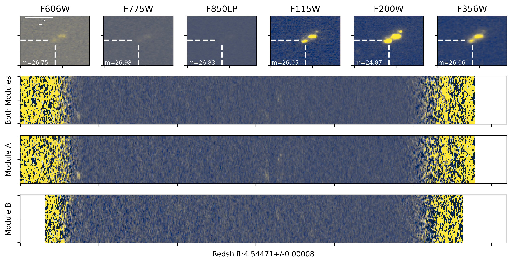 |
v3corstacked_2D_8183 | 15.053793 | 28.047379 | 4.544715 | 0.000084 | 1.5 | Eiger_Strong | Potentially clumpy galaxy or a merger. Need photoz for verification | 0.0 | 4.547919 | 26.059673 | 24.867792 | 26.047430 | 26.825066 | 26.979412 | 26.750830 |
| 28 | 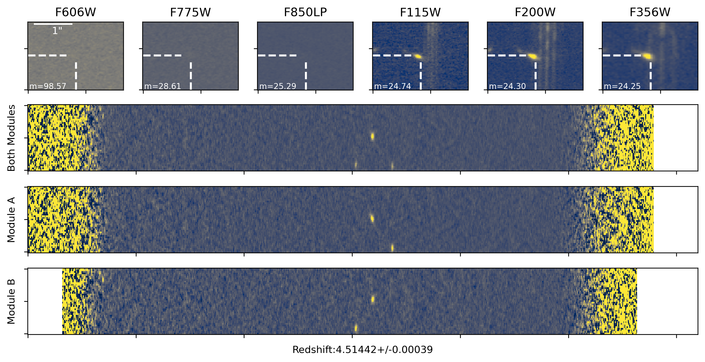 |
v3corstacked_2D_9950 | 15.055354 | 28.041262 | 4.514417 | 0.000393 | 1.5 | Eiger_Strong | Potential, need photo-z | 0.0 | 4.518003 | 24.254097 | 24.302805 | 24.743656 | 25.292994 | 28.605188 | 98.571411 |
| 29 | 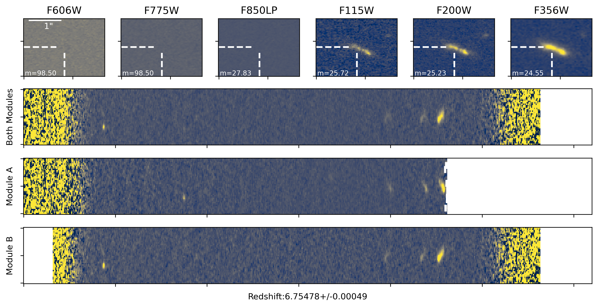 |
v3corstacked_2D_18545 | 15.054199 | 28.030599 | 6.754783 | 0.000489 | 3.0 | Eiger_Strong | Confident tripple line detection | 0.0 | 4.868309 | 24.548880 | 25.228376 | 25.715845 | 27.825230 | 98.495445 | 98.495445 |
| 30 | 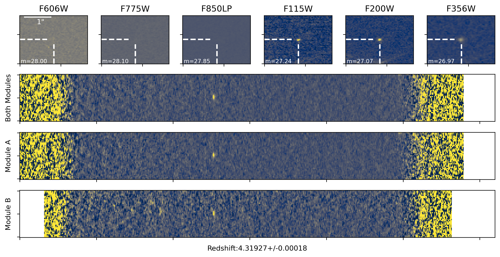 |
v3corstacked_2D_20233 | 15.028923 | 28.023660 | 4.319265 | 0.000183 | 2.0 | Eiger_Strong | Potential Halpha, need photo-z to confirm | 0.0 | 4.322595 | 26.965263 | 27.070044 | 27.244453 | 27.849091 | 28.098663 | 28.004688 |
| 31 | 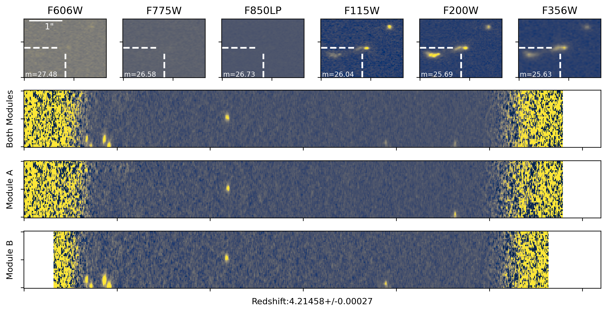 |
v3corstacked_2D_7514 | 15.057518 | 28.045557 | 4.214579 | 0.000267 | 2.0 | Eiger_Strong | Merger candidate, stamp shows clumpy morphology and a potential tidal tail | 0.0 | 4.219522 | 25.634521 | 25.693968 | 26.040239 | 26.732624 | 26.577396 | 27.483406 |
| 32 | 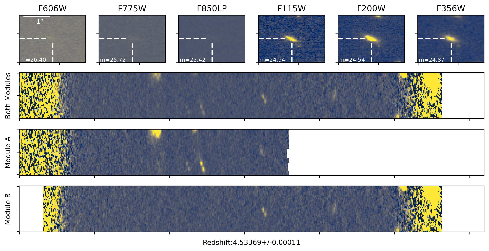 |
v3corstacked_2D_18007 | 15.055513 | 28.027079 | 4.533686 | 0.000113 | 2.0 | Eiger_Strong | Potential merger/clumpy galaxy. Photo-z needed | 0.0 | 4.536486 | 24.867676 | 24.541317 | 24.935139 | 25.416782 | 25.721127 | 26.401667 |
| 33 | 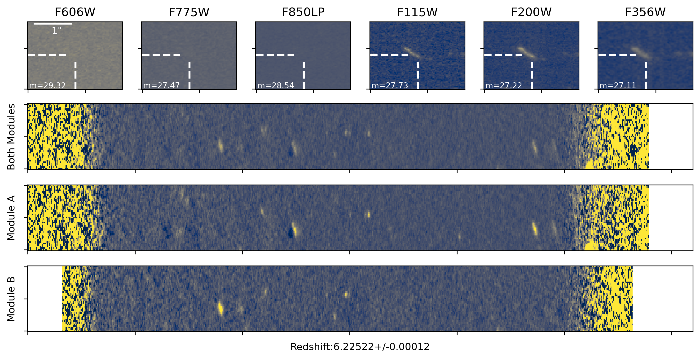 |
v3corstacked_2D_7938 | 15.057960 | 28.042754 | 6.225223 | 0.000120 | 2.0 | Eiger_Strong | Defeinite OIII triplet, but wavelength solution is off between both modules. | 0.0 | 4.229680 | 27.112957 | 27.215322 | 27.725983 | 28.537680 | 27.474852 | 29.323513 |
| 34 | 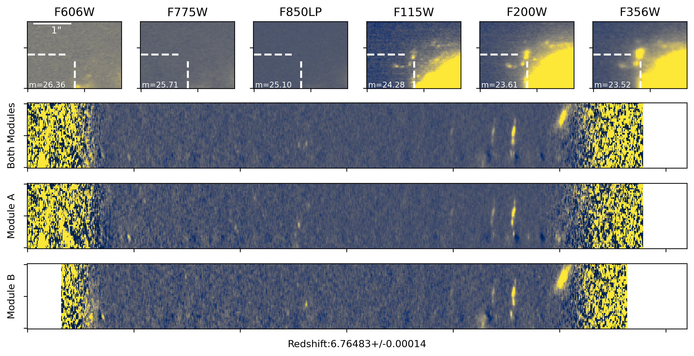 |
v3corstacked_2D_19021 | 15.052165 | 28.034417 | 6.764831 | 0.000139 | 3.0 | Eiger_Strong | very confident Merger/Lens candidate | 0.0 | 4.871050 | 23.515860 | 23.605808 | 24.280588 | 25.100155 | 25.706102 | 26.362925 |
| 35 | 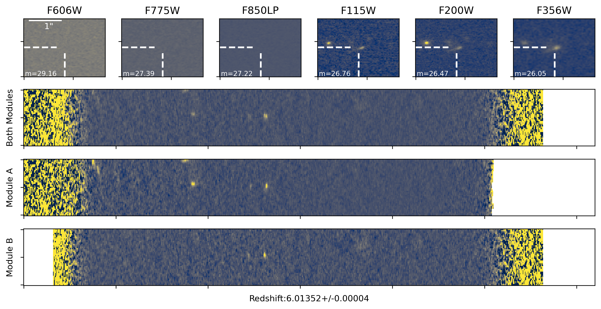 |
v3corstacked_2D_6898 | 15.064898 | 28.038865 | 6.013524 | 0.000043 | 3.0 | Eiger_Strong | vert confident OIII doublet detected | 0.0 | 4.351062 | 26.045519 | 26.468102 | 26.764977 | 27.224415 | 27.391344 | 29.160402 |
| 36 | 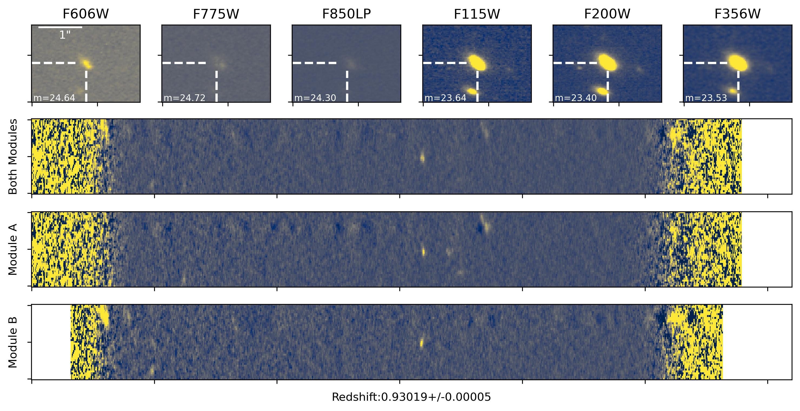 |
v3corstacked_2D_8263 | 15.055625 | 28.046466 | 0.930189 | 0.000048 | 1.5 | Eiger_Strong | Need photo-z, based on galaxy image size, possibly low-z galaxy | 0.0 | 4.517981 | 23.531925 | 23.404764 | 23.639957 | 24.295630 | 24.715462 | 24.636538 |
| 37 | 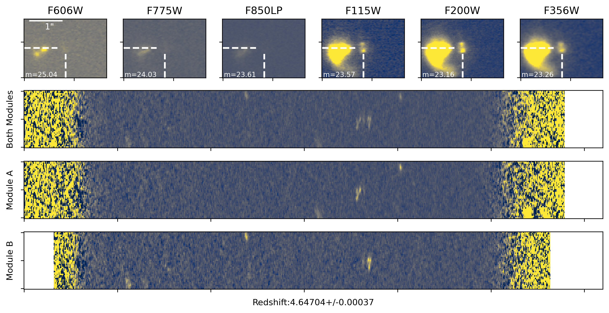 |
v3corstacked_2D_10424 | 15.054457 | 28.043500 | 4.647040 | 0.000372 | 1.5 | Eiger_Strong | Low confidence, need photo-z, weak single line seen in both modules. | 0.0 | 4.651113 | 23.259016 | 23.158491 | 23.574026 | 23.612289 | 24.032040 | 25.042339 |
| 38 | 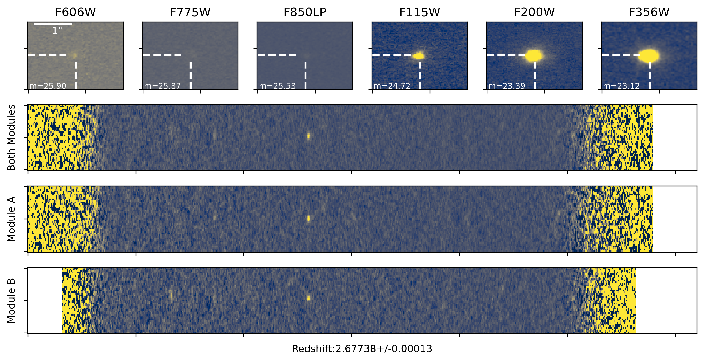 |
v3corstacked_2D_6569 | 15.059618 | 28.048423 | 2.677379 | 0.000133 | 3.0 | Eiger_Strong | High confident | 0.0 | 4.343987 | 23.120087 | 23.385258 | 24.723402 | 25.529299 | 25.866240 | 25.901098 |
| 39 | v3corstacked_2D_7143 | 15.060288 | 28.043867 | 4.222077 | 0.000086 | 3.0 | Eiger_Strong | Merger lower object/Or lensing, need photo-z | 0.0 | 4.224803 | 25.399580 | 25.491209 | 25.964668 | 26.166399 | 26.302818 | 26.963301 | |
| 40 | 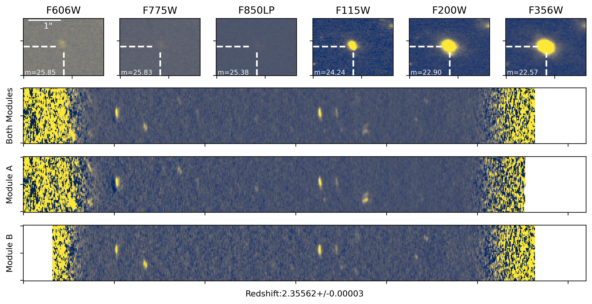 |
v3corstacked_2D_8219 | 15.061340 | 28.038586 | 2.355617 | 0.000034 | 3.0 | Eiger_Strong | High confidence, SIII blended with P-epsilon | NaN | 4.541166 | 22.573048 | 22.901871 | 24.239027 | 25.383274 | 25.828184 | 25.848274 |
| 41 | 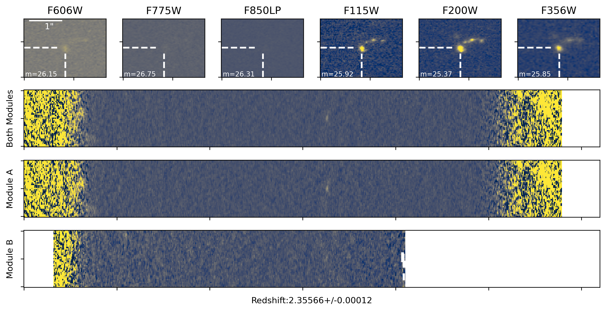 |
v3corstacked_2D_8608 | 15.049409 | 28.051921 | 2.355663 | 0.000124 | 2.5 | Eiger_Strong | very kikely lowz merger, need photo-z to confirm | 0.0 | 4.540769 | 25.847229 | 25.369087 | 25.919317 | 26.309439 | 26.753698 | 26.150536 |
| 42 | 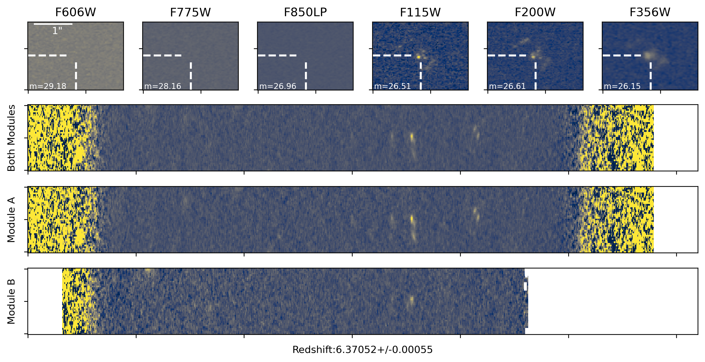 |
v3corstacked_2D_17751 | 15.041282 | 28.044664 | 6.370523 | 0.000547 | 3.0 | Eiger_Strong | Solid detection | 0.0 | 4.627129 | 26.148432 | 26.605104 | 26.514956 | 26.959103 | 28.158726 | 29.182104 |
| 43 | 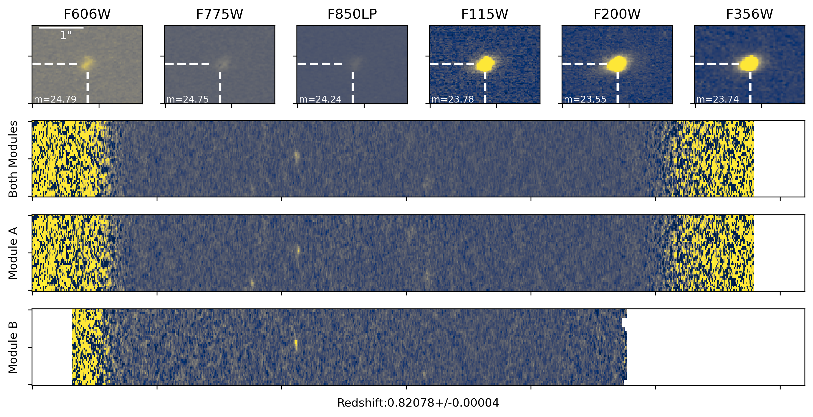 |
v3corstacked_2D_15783 | 15.036403 | 28.041047 | 0.820783 | 0.000039 | 1.5 | Eiger_Strong | Potential low-z absorber, need photo-z, based on galaxy size on stamp | 0.0 | 4.202059 | 23.737795 | 23.545120 | 23.779892 | 24.236027 | 24.748566 | 24.787376 |
| 44 | 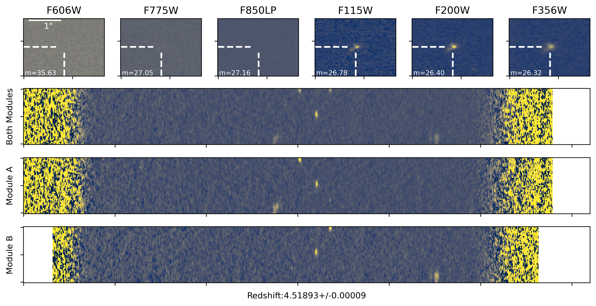 |
v3corstacked_2D_9078 | 15.056028 | 28.040967 | 4.518929 | 0.000091 | 1.5 | Eiger_Strong | Check photo-z | 0.0 | 4.523191 | 26.319860 | 26.399984 | 26.778637 | 27.160683 | 27.053806 | 35.633793 |
{kind=link}
{kind=link}
{kind=link}
{kind=link}
{kind=link}
{kind=link}
{kind=link}
{kind=link}
{kind=link}
{kind=link}
{kind=link}
{kind=link}
{kind=link}
{kind=link}
{kind=link}
{kind=link}
{kind=link}
{kind=link}
{kind=link}
{kind=link}
{kind=link}
{kind=link}
{kind=link}
{kind=link}
{kind=link}
{kind=link}
{kind=link}
{kind=link}
{kind=link}
{kind=link}
{kind=link}
{kind=link}
{kind=link}
{kind=link}
{kind=link}
{kind=link}
{kind=link}
{kind=link}
{kind=link}
{kind=link}
{kind=link}
{kind=link}
{kind=link}
{kind=link}
{kind=link}